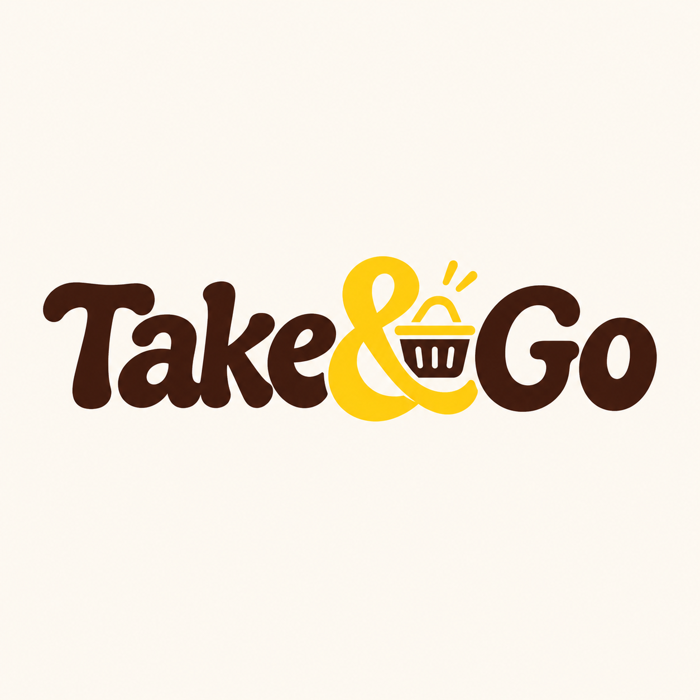

TU PARADA, SIN PASAR POR CAJA
Lo coges.
Y sigues tu camino.
Entra con tu identidad GAS&GO, elige tus productos y sal. Nosotros nos encargamos del resto.
Perfil ficticio · Sin conexión a tu cuenta GAS&GO.
Sin cámaras conectadas ni cobros reales.